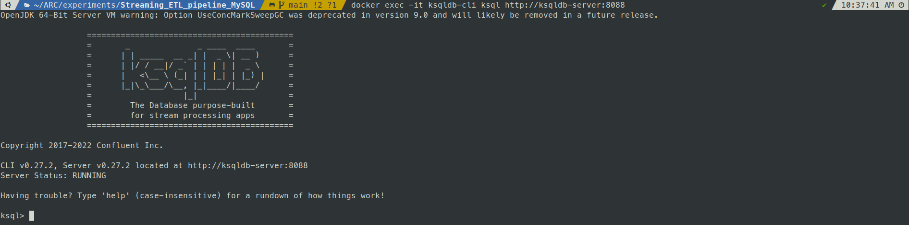

ksqlDB and ksql-cli
Introduction
This example provides a base setup for using ksqlDB (The database purpose-built for stream processing applications) and ksql-cli.
Minimum Software Requirements
- Docker (ksqldb-server, ksqldb-cli)
- Docker Compose
Getting Started
Setup
Running the application via docker compose
ksqldb-server:
image: confluentinc/ksqldb-server:latest
container_name: ksqldb-server
hostname: ksqldb-server
depends_on: [kafka]
ports:
- 8088:8088
networks:
- webproxy
environment:
KSQL_LISTENERS: http://0.0.0.0:8088
KSQL_BOOTSTRAP_SERVERS: kafka:9092
KSQL_KSQL_LOGGING_PROCESSING_STREAM_AUTO_CREATE: "true"
KSQL_KSQL_LOGGING_PROCESSING_TOPIC_AUTO_CREATE: "true"
KSQL_KSQL_CONNECT_URL: http://kafka-connect-01:8084
KSQL_KSQL_SCHEMA_REGISTRY_URL: http://schema-registry:8081
ksqldb-cli:
image: confluentinc/ksqldb-cli:latest
container_name: ksqldb-cli
networks:
- webproxy
depends_on: [kafka, ksqldb-server]
entrypoint: /bin/sh
tty: true
environment:
KSQL_KSQL_CONNECT_URL: http://kafka-connect-01:8084
Pull all required docker images
$ docker-compose pull
Start up the environment
The first time that you do this, the Docker images will be pulled down from the remote server. This may take a while!
$ docker-compose up
Creating ksqldb-server ... done
Creating ksqldb-cli ... done
Accessing ksqlDb via ksqldb-cli
$ docker exec -it ksqldb-cli ksql http://ksqldb-server:8088

Check topics, streams and tables
show topics;
show streams;
show tables;
Streams
- Declare Streams
SET 'auto.offset.reset' = 'earliest';
CREATE STREAM PERSON_STREAM (id bigint,uuid VARCHAR,created_date_time TIMESTAMP,last_modified_date_time TIMESTAMP,name VARCHAR,username VARCHAR,address_id bigint) WITH (KAFKA_TOPIC='mysql.streaming_etl_db.person',VALUE_FORMAT='JSON');
CREATE STREAM ADDRESS_STREAM (id bigint,uuid VARCHAR,created_date_time TIMESTAMP,last_modified_date_time TIMESTAMP,city VARCHAR,street VARCHAR,suite VARCHAR,zipcode VARCHAR,geo_id bigint) WITH (KAFKA_TOPIC='mysql.streaming_etl_db.address',VALUE_FORMAT='JSON');
- Queries
DESCRIBE PERSON_STREAM;
select * from PERSON_STREAM;
SELECT * FROM PERSON_STREAM EMIT CHANGES LIMIT 1;
+-------------------------+-------------------------+-------------------------+-------------------------+-------------------------+-------------------------+-------------------------+
|ID |UUID |CREATED_DATE_TIME |LAST_MODIFIED_DATE_TIME |NAME |USERNAME |ADDRESS_ID |
+-------------------------+-------------------------+-------------------------+-------------------------+-------------------------+-------------------------+-------------------------+
|1 |ce8d2120-1f93-11ed-8647-0|2022-08-19T13:22:00.000 |2022-08-19T13:22:00.000 |d14 |dbz14 |1 |
| |c9a3cfadc50 | | | | | |
Limit Reached
Query terminated
- stream-stream join
CREATE STREAM PERSON_ADDRESS_ENRICHED_STREAM WITH (FORMAT='JSON', KAFKA_TOPIC='person_address_enriched', PARTITIONS=1, REPLICAS=1) AS
SELECT
P.ID P_ID,
A.ID A_ID,
P.NAME NAME,
A.CITY CITY
FROM PERSON_STREAM P
LEFT OUTER JOIN ADDRESS_STREAM A WITHIN 1 HOURS GRACE PERIOD 30 MINUTES ON ((A.ID = P.ADDRESS_ID))
EMIT CHANGES;
Tables
- Declare Tables
CREATE TABLE PERSON (id bigint PRIMARY KEY,uuid VARCHAR,created_date_time TIMESTAMP,last_modified_date_time TIMESTAMP,name VARCHAR,username VARCHAR,address_id bigint) WITH (KAFKA_TOPIC='mysql.streaming_etl_db.person',VALUE_FORMAT='JSON');
CREATE TABLE ADDRESS (id bigint PRIMARY KEY,uuid VARCHAR,created_date_time TIMESTAMP,last_modified_date_time TIMESTAMP,city VARCHAR,street VARCHAR,suite VARCHAR,zipcode VARCHAR,geo_id bigint) WITH (KAFKA_TOPIC='mysql.streaming_etl_db.address',VALUE_FORMAT='JSON');
SELECT * FROM PERSON EMIT CHANGES LIMIT 1;
SELECT * FROM ADDRESS EMIT CHANGES LIMIT 1;
- Table Joins
SELECT
P.NAME,
A.CITY
FROM PERSON P
LEFT JOIN ADDRESS A on A.id = P.address_id
EMIT CHANGES
LIMIT 1;
SELECT
P.NAME,
A.CITY
FROM PERSON P
INNER JOIN ADDRESS A
ON A.id = P.address_id
EMIT CHANGES
LIMIT 1;
CREATE TABLE PERSON_ADDRESS_ENRICHED (P_ID bigint,A_ID bigint,NAME VARCHAR,CITY VARCHAR) WITH (KAFKA_TOPIC='person_address_enriched',VALUE_FORMAT='JSON');
- Others
DROP TABLE IF EXISTS PERSON;
Tear down the stack
$ docker compose-down
Stopping ksqldb-cli ... done
Stopping ksqldb-server ... done
Removing ksqldb-cli ... done
Removing ksqldb-server ... done
If you want to preserve the state of all containers, run docker-compose stop instead.